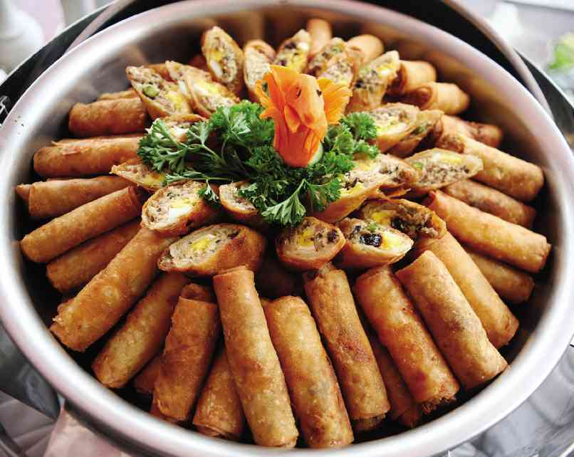

Back
LUMPIA

Ingredients
Instructions
Nutrition Information Calories: Carbs 16 g
Dietary Fiber 2 g
Sugars 1 g
Fat 4 g
Saturated 1 g
Polyunsaturated 0 g
Monounsaturated 0 g
Trans 0 g
Protein 4 g
Sodium 250 mg
Potassium 0 mg
Cholesterol 15 mg
Vitamin A 15 %
Vitamin C 8 %